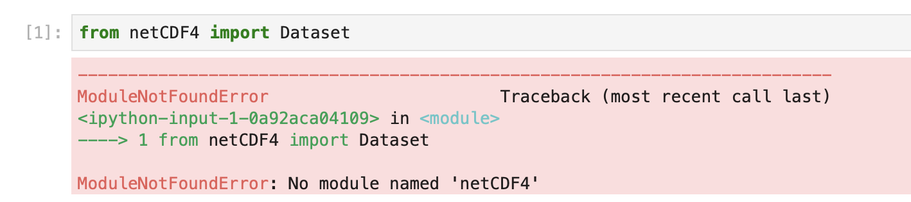
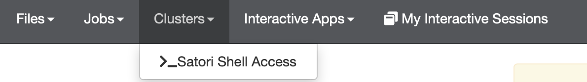

How can I create custom Jupyter kernels for the Satori web portal?¶
The Open On Demand (OOD) Satori portal has a set of centrally installed Jupyter kernels that include common software. The aims is to cover most things needed for frequently used tools. If you start using the portal extensively, sometimes you will come across packages that are missing and see a message like this image
{kind=link}
This is a sad moment, but inevtiable because people keep creating new and exciting packages and it is hard for the central repository to keep up. Fortunately it is possible to create a custom kernel yourself. This kernel will then be included in the OOD launcher options for your account alongside the standard kernels. A kernel you create can include any available software you can figure out how to install. The instructions on this page show you how to go about creating your own kernel.
Note you can also request that modules be added to one of the standard environments or that a new standard environment be added. The standard modues do evolve and new software is added as it the administration group becomes aware of them. Sometimes, however, getting a module added to the standard environment requires waiting a little, or the module may conflict with something else.
By learning how to add your own kernels you can avoid having to wait and work around any incompatibilities. You can also gather customized, versioned sets of tools into a standard kernels that can then be shared within a group working on a common project, or that you can request be added for your group to a standard set. This can be more efficient than having to wait for something to installed centrally every time you find a new awesome package that all the cool people are using.
An additional benefit of knowing how to create your own kernels is that it can help with sharing and reproducibility of results. Strict versioning and maintaining historic kernels in perpetuity in central locations can easily become an impractical combinatorial challenge. Creating precise kernels that collect specific version combinations of software in an immutable state in a per account location can help, although this still requires care and diligence!
Steps to create a kernel¶
These instructions assume you are slightly familiar with conda ( https://docs.conda.io/en/latest/index.html ), that you are starting a brand new conda environment for this kernel. The steps involve a series of terminal commands and assume you are familiar with working at the terminal command line ( if you are not you can ask someone for help and can also find tutorials on line https://ryanstutorials.net/linuxtutorial/ ). There is a terminal available in the OOD portal, under the Clusters pull-down.
{kind=link}
we will use the OOD terminal for executing the steps needed for a custom kernel. Alternatively, the same steps
can be carried out when logged in from an ssh session, for example via the command line
ssh -l USER satori-login-001.mit.edu of through a client like PuTTY.
To create our new kernel we will
- Create a brand new, clean conda environment in a new directory
- Activate the environment and install the packages we need
- Initialise the interactive python settings for the new environment
Commands to create a new conda environment with a custom Python kernel¶
Create. The bash shell commands create a new conda environment. This example uses the account name
cnh. The new environment is placed in a new directory under the scratch space/nobackup/users/cnh/projects/condasbelonging to the accountcnh. The new environment is namedcnh-awesome-new-environment. These values can be changed for different accounts and ways of organizing files. The command sequence starts withconda deactivateto prevent inadvertantly overwriting and existing conda environment. If conda is not already activted then the messageconda: command not foundmay be printed. That is OK:CKNAME=cnh-awesome-new-environment CKUSER=cnh CKROOT=projects/condas conda deactivate mkdir -p /nobackup/users/${CKUSER}/${CKROOT}/${CKNAME} cd /nobackup/users/${CKUSER}/${CKROOT}/${CKNAME} wget https://repo.continuum.io/miniconda/Miniconda2-4.7.12.1-Linux-ppc64le.sh chmod +x Miniconda2-4.7.12.1-Linux-ppc64le.sh ./Miniconda2-4.7.12.1-Linux-ppc64le.sh -b -p `pwd`/miniconda3 . miniconda3/etc/profile.d/conda.sh conda config --prepend channels https://public.dhe.ibm.com/ibmdl/export/pub/software/server/ibm-ai/conda/NOTE - the conda commands tend to hard code full path names as part of their installation. So, once the Create step is complete, renaming or moving the install directory (
/nobackup/users/cnh/projects/condas/cnh-awesome-new-environmentin this example) will break the setup.Activate. Once the new conda environment has been created in its own directory, make sure the shell still has the correct settings and then activate the environment in the terminal shell session using the following commands:
CKNAME=cnh-awesome-new-environment CKUSER=cnh CKROOT=projects/condas cd /nobackup/users/${CKUSER}/${CKROOT}/${CKNAME} export PATH="`pwd`/miniconda3/bin:$PATH" . miniconda3/etc/profile.d/conda.sh conda create -y --name ${CKNAME} python=3.6 conda activate ${CKNAME}NOTE - the conda environment activate step applies to the terminal shell session in which the activate commands are run. If you start a new terminal or shell you will need to rerun the activate step before exectuing the install commands.
Install. Once the conda environment has been created and is activated in the terminal shell the final step involves running install commands in the shell. In the example shown here we will install the IBM
poweraisoftware stack and addkeras(https://anaconda.org/anaconda/keras),patsy(https://anaconda.org/anaconda/patsy),seaborn( https://anaconda.org/anaconda/seaborn ),statsmodels( https://anaconda.org/anaconda/statsmodels ) andnetcdf4(https://anaconda.org/anaconda/netcdf4). All exceptnetcdf4are currently in a standard kernel on Satori. We include an environment variableIBM_POWERAI_LICENSE_ACCEPT=yesso that we can run things without interaction. The final commands needed are then:CKNAME=cnh-awesome-new-environment CKUSER=cnh CKROOT=projects/condas cd /nobackup/users/${CKUSER}/${CKROOT}/${CKNAME} export PATH="`pwd`/miniconda3/bin:$PATH" . miniconda3/etc/profile.d/conda.sh conda activate ${CKNAME} export IBM_POWERAI_LICENSE_ACCEPT=yes conda install -y powerai conda install -y keras patsy seaborn netcdf4 pip install --user ipykernel python -m ipykernel install --user --name=${CKNAME}This creates a new kernel we can start from in the OOD Jupyter launcher. It should be visible, under the name given by
${CKNAME}, when a new Jupyter session is started.
An added bonus - updating on the fly¶
Once you have created a new kernel conda environment it is ownde by your account, so it can be updated if needed. This
is unlike the standard system kernels which are currently read-only. For example in the example above the kernel
environment does not include cuml ( https://anaconda.org/rapidsai/cuml ). The cuml package can be used to
greatly accelerate TSNE dimensionality reduction
( see - https://medium.com/rapids-ai/tsne-with-gpus-hours-to-seconds-9d9c17c941db ), so it may be neded at some point e.g.
when an import like from cuml.manifold import TSNE fails. Rather than going through the entire Create,
Activate, Install sequence from scratch we can update in a Terminal within Jupyter and then reestart our
kernel. The commands for this are:
CKNAME=cnh-awesome-new-environment
CKUSER=cnh
CKROOT=projects/condas
cd /nobackup/users/${CKUSER}/${CKROOT}/${CKNAME}
export PATH="`pwd`/miniconda3/bin:$PATH"
. miniconda3/etc/profile.d/conda.sh
conda activate ${CKNAME}
conda install cuml
when this completes we can restart the kernel and the new package will be avaiable.
Some additional steps for Julia and Octave¶
Additionally we might want to include a Julia interactive environment and an Octave interactive environment. This section should document more about how that works. This content is still under development:
module load julia/1.3.0
julia -E 'using Pkg; Pkg.add("IJulia")'
Files and directories¶
There are several files and directories that are useful to know about. This section will provide some details on these. Some of the key files are listed below. This section is still under development:
~/.local/share/jupyter/kernels/cnh-awesome-new-environment/
~/.local/share/jupyter/kernels/cnh-awesome-new-environment/kernel.json
~/.local/share/jupyter/kernels/julia-1.3